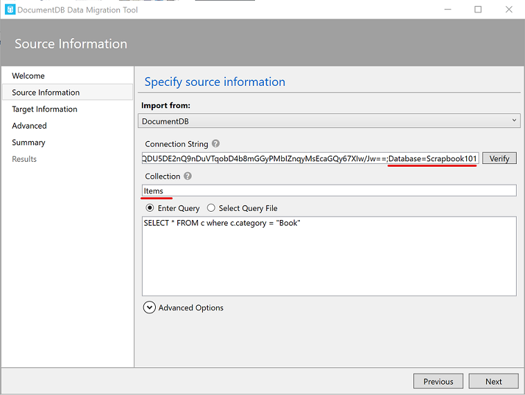

Next Steps
After following the steps in Get Started, you may be wondering what's next. There are many directions you can go in depending on what you are trying to do. Below, we present a few ideas of what to think about next including security, improved search and styling, and paging.
Security
Authentication is verifying the identify of a person or device (an account in general). Scrapbook101core does not have authentication implemented, but it can be added. This is especially important when running live. For example, you can add code to allow users to sign in with Google, Facebook, or Microsoft accounts as well as by other means. Even if your Scrapbook101core implementation is open, tracking who makes and edits entries is useful. This can be done by capturing the associated email or user name and using that in the updatedBy field in the item-document.
If the intent of your Scrapbook101core implementation is to allow access to only certain accounts, then you need to additionally set up Authorization, that is, associating privileges to specific accounts. In fact, you should never store personal information (be it with Scrapbook101core or any other means) without authentication and authorization in place. For an overview of security in ASP.NET Core, see Introduction to authorization in ASP.NET Core. The approaches discussed there could be useful when running locally. When running as a web service such as in Microsoft Azure, see Advanced usage of authentication and authorization in Azure App Service.
Searching
The search functionality implemented in Scrapbook101core allows searching titles and descriptions for a string fragment. The code to do this is in the ItemController class IndexAsync method, which uses LINQ:
[ActionName("Index")]
public async Task<ActionResult> IndexAsync(string filter)
{
if (String.IsNullOrEmpty(filter))
{
var items = await DocumentDBRepository<Item>.GetItemsAsync(
item => item.Type == AppVariables.ItemDocumentType,
item => item.DateAdded);
ViewBag.imagePath = HelperClasses.BuildPathList(items);
return View(items);
}
else
{
var items = await DocumentDBRepository<Item>.GetItemsAsync(
item => item.Type == AppVariables.ItemDocumentType
&& (item.Title.ToLower().Contains(filter.ToLower()))
|| (item.Description.ToLower().Contains(filter.ToLower())),
item => item.DateAdded);
ViewBag.imagePath = HelperClasses.BuildPathList(items);
return View(items);
}
}
If filter is provided, then it is used, otherwise, all items are returned. This is basic functionality that can be expanded to include searching other fields like location and assetPath or any search logic needed for your application. In the code snippet above, items are returned ordered by dateAdded.
Styling
The create, delete, update, and edit pages (under the Views\Item folder) are currently minimally styled. They can be improved and rearranged as needed. For example in the edit page, the description field can be customized for long or short descriptions and fields that can't or shouldn't be changed (like id and type) can be removed from the form.
In contrast to the CRUD pages, the Scrapbook101core main page (Views\Item\Index.cshtml) is styled more. We use Bootstrap to demonstrate a possible visual representation of Scrapbook101core items. Specifically, Bootstrap cards structure is used which shows one asset image if it exists or else show a default image as specified in the appsettings.json configuration along with a snippet of the title and description of the item.
All the scripts for styling are injected in Views\Shared\__LayoutScrapbook.cshtml. A more practical approach is to bundle the scripts together and include them using a tool such as Bundle & Minifier or BuildBundleMinifer.
Paging
Paging is not currently implemented for Scrapbook101core. Paging features can be added by modifying the search results in the
ItemController class IndexAsync method and returned to Views\Item\Index.cshtml.
Our experience running our personal version of Scrapbook with over 7000 entries and without paging is that we rarely miss not having paging functionality. We show one page of results for a search, with the number shown being configurable, e.g., at 50 items. If we don't find what we want, we make the search more precise or change the number of results displayed. This is sufficient for most of the searches we make so that we haven't felt the need to implement paging. The takeaway message is this: don't implement paging until you have other more important features like security and searching in place first.
Import data
If you ran Scrapbook101core locally and start to add entries and then decide to go-live, you can transfer your local data to your on-line data-store using the Azure Cosmos DB Data Migration tool. When using the migration tool, be sure to correctly set the Connection String and Collection fields. For example, after running the Scrapbook101core code you should have a database "Scrapbook101" with a collection "Items". These values are used in the migration tool as shown in the following screenshot.

If you have external data that you want to import into Scrapbook101core to seed the database, you can similarly use this import tool.